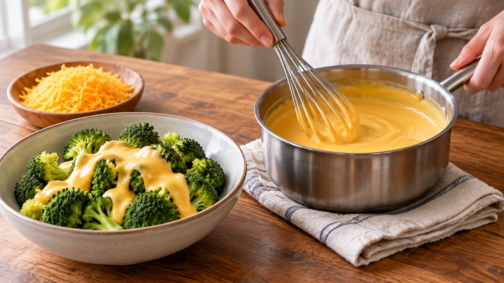

チーズソースが分離しにくくなる、ひとつの工夫
チーズを牛乳で温めたら、油が浮いて、細かな塊が残ってしまった。そんな経験はありませんか。温かい野菜にとろりとかけたいのに、思うようにまとまらないことがあります。
牛乳に食品用クエン酸三ナトリウムを溶かしてからチーズを加えると、なめらかなソースにまとめやすくなります。 まずは材料を量り、チーズを少しずつ混ぜるところから始めましょう。
チーズには水分と油分が含まれています。温め方やチーズの種類によって、それらが分かれ、油が浮くことがあります。食品用クエン酸三ナトリウムを加えると、チーズの中で固くつながっていた部分がほどけ、水分と油分がなじみやすくなります。特別な手さばきより、材料を入れる順番が大切です。
ここで使うのは、酸味づけに使うクエン酸やレモン汁ではありません。名前は似ていますが、別の材料です。日本の食品添加物公定書にも載るクエン酸三ナトリウムを、食品用と表示された製品から選びます。この公定書は成分の規格を示すもので、以下の料理の分量を勧める資料ではありません。
温かいブロッコリーのチーズソース（2人分）
材料
- チェダーチーズ：100g（細かく刻むか削る）
- 牛乳：50g
- 食品用クエン酸三ナトリウム：3g
- ブロッコリー：約200g
作り方
- ブロッコリーを小房に分け、蒸気の上がった蒸し器で4～5分を目安に蒸す。水気を切って器に盛る。
- 小鍋に牛乳と、量った食品用クエン酸三ナトリウムを入れて混ぜる。袋の「食品用」の表示を確かめ、クエン酸やレモン汁で代用しない。
- 弱めの中火で混ぜながら、湯気が出るまで温める。沸騰させ続けず、細かくしたチーズを数回に分けて加え、その都度よく混ぜる。
- 全体がなめらかに混ざったら火を止め、温かいブロッコリーにかける。残ったソースを保存するなら、粗熱を取って速やかに冷蔵庫へ入れ、早めに食べ切る。
別のチーズでは、水分や油分の量が違うため、同じ分量でもソースの濃さが変わります。パスタや温かいじゃがいもにかけるときは、鍋の中で流れ方を見て、固ければ牛乳を少しずつ足してみてください。
チーズソースが分かれてしまうときは、材料と入れる順番を見直すと作りやすくなります。食品用クエン酸三ナトリウムを牛乳に溶かし、刻んだチーズを少しずつ混ぜてみましょう。